应急响应基础篇
常用工具介绍
- [ProcessExplorer] 是进程管理工具，能管理隐藏在后台运行的程序，可监视、挂起、重启、强行终止任何程序，包括系统级的不允许随便终止的关键进程等。
- PCHunter 一个功能强大的Windows系统信息查看软件，同时也是手工杀毒软件，不但可以查看各类系统信息，还可以查计算机中潜伏的挖矿木马。
Windows
- SysinternalSuite
- PCHunter/火绒剑/PowerTool
- Process Monitor
- Event Log Explorer
- FullEventLogView
- Log Parser
- [WinPrefetch View]
- [WifiHistory View]
Linux
勒索病毒搜索引擎
勒索病毒解密工具
- nomoreransom勒索软件解密工具集
- MalwareHunterTeam勒索软件解密工具集
- Github解密工具汇总
- 腾讯哈勃勒索软件专杀工具
- 趋势科技勒索病毒解密工具
- 金山毒霸勒索病毒免疫工具
- 火绒安全工具下载
- 瑞星解密工具下载
- 卡巴斯基免费勒索解密器
- Avast免费勒索软件解密工具
- Emsisoft免费勒索软件解密工具
- Linux勒索病毒样本 GonnaCry
系统排查
网络拓扑、业务架构、服务器类型等信息
感染主机相关信息
- 系统名称、节点、主机名
- 物理机/虚拟机
- 操作系统及版本
- IP地址、开放端口
- 中间件及版本
- 数据库类型
- Web框架等
系统基本信息
Windows
在搜索框中键入msinfo32 。
用鼠标右键单击搜索结果中的系统信息，然后选择以管理员身份运行。
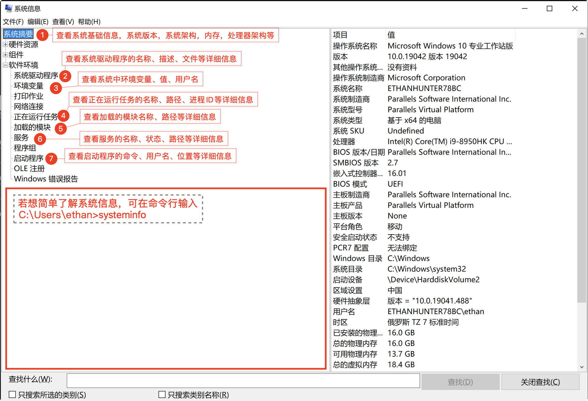
Linux
lscpu # 查看CPU相关信息，包括型号、主频、内核等信息
uname -a # 查看当前操作系统信息
cat /proc/version #查看当前操作系统版本
lsmod # 查看所有已载入系统的模块信息系统用户信息
Windows
命令行查看
&rem 为cmd下的注释符
net user &rem 收集用户账户信息，但看不到以$结尾的隐藏账户 net user <username> &rem 查看指定用户的详细信息GUI查看
在cmd中输入compmgmt.msc即可调出计算机管理窗口
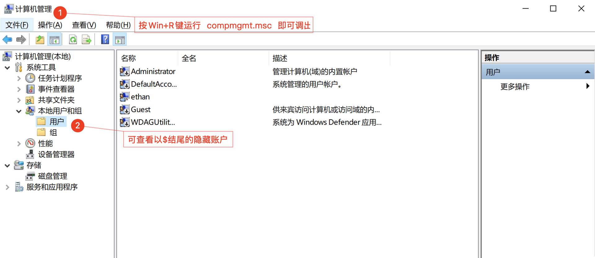注册表查看
配置当用用户拥有对SAM的读取权限,配置后按F5刷新
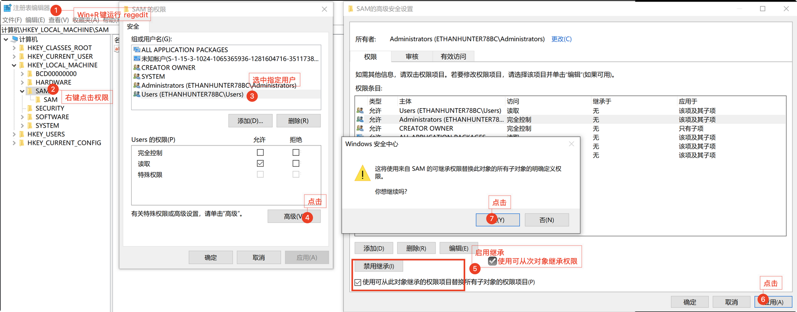在第3步选中账户给予：完全控制 亦可。
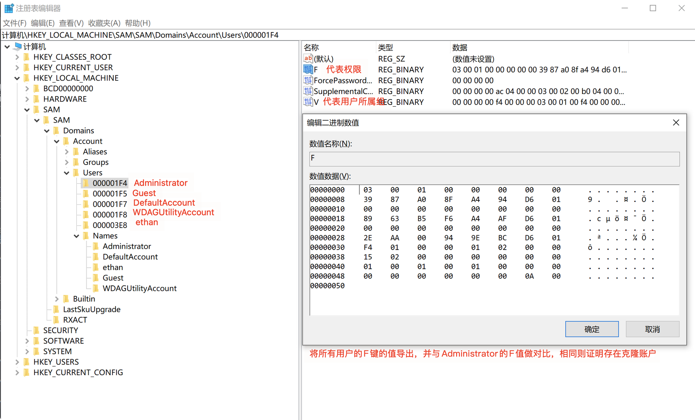
wmic查看
wmic是WMI(Widnwos Management Instrumentation)的扩展，
提供从命令行接口和批命令脚本执行系统管理命令wmic useraccount get name,sid &rem 获取系统中用户名和系统的SID值
Linux
cat /etc/passwd # 查看系统所有用户信息
awk -F: '{if($3==0)print $1}' /etc/passwd # 查看用户UID为0的账户，即root账户
awk -F:'length($2)==0{print $1}' /etc/shadow # 查看是否存在空口令账户
cat /etc/passwd | grep '/bin/bash' # 查看可登陆的用户
last # 查看显示近期用户或终端的登录情况
lastlog # 查看登陆过所有用户的最近一次登陆时间
lastb # 查看登陆失败的用户账户信息
who # 查看当前登陆系统的用户last -f 指定数据源,如下:
- /var/log/wtmp 存储登陆成功信息
- /var/log/btmp 存储登陆失败信息
- /var/log/utmp 存储当前正在登陆的信息
启动项
重点查找开机启动项中的可疑启动项
Windows
1. 通过【系统配置】对话框查看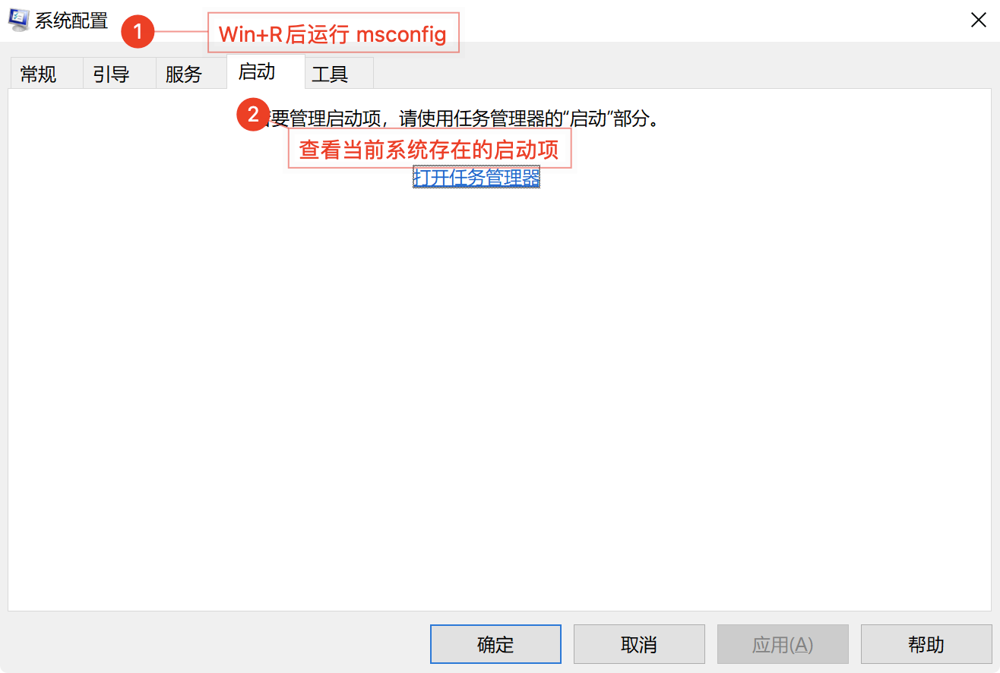
2. 通过注册表查看路径：计算机\HKEY_LOCAL_MACHINE\SOFTWARE\Microsoft\Windows\CurrentVersion\Run
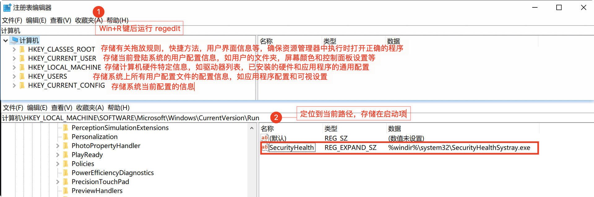
Linux
more /etc/init.d/rc.local /etc/rc.d/rc[0-6].d # 查看rc.local文件内容
ls -alt /etc/init.d/ # 查看init.d文件夹下所有文件的详细信息
任务计划
Windows
通过计算机管理窗口查询
通过powershell查询
通过cmd查询
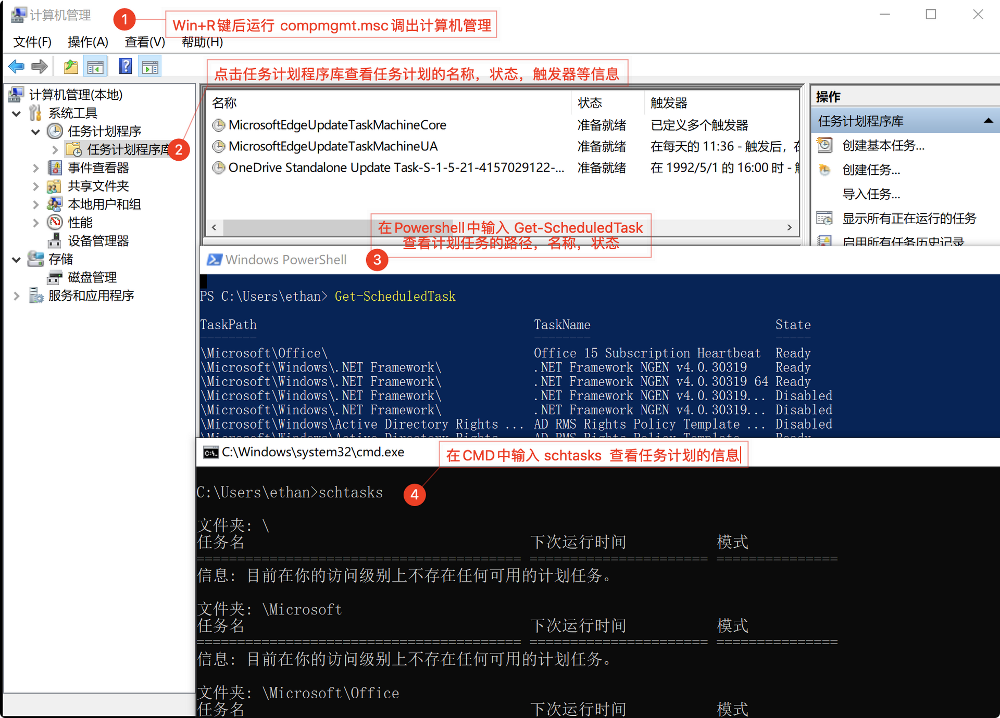
Linux
crontab -u root -l # 查看root用户的计划任务
more /etc/cron*/ # 查看cron下的定时任务
cat /etc/crontab # 查看系统的任务计划
crontab -u root -l # 查看用户的任务计划
cat /etc/anacrontab # 查看anacrontab中的任务
cat /root/.bash_history #查看历史命令其他
1.Windows补丁
通过systeminfo排查MS17-010漏洞补丁
操作系统对应MS17-010的补丁号
|系统|补丁号|
|:—:|:—:|
|WinXP|KB4012598|
|Win2003|KB4012598|
|Win2008R2|KB4012212、KB4012215|
|Win7|KB4012212、KB4012215|
- Windows防火墙规则
netsh firewall show state
文件痕迹排查
文件排查排查根据：
根据勒索病毒加密时间对文件夹内文件列表时间进行排序
- 查找距离文件加密事件1-3天创建和修改的文件
- 查找可疑时间点创建和修改的文件
Windows
敏感目录
- 各个盘下的Temp目录
C:\Windows\Temp\C:\Users\<user>\AppData\Local\Temp\C:\Users\<user>\Desktop\C:\Users\<user>\Downloads\C:\Users\<user>\Pictures\
可疑文件名称：
- svchost.exe
- WindowsUpdate.exe
- Ares.exe
- Snake.exe
- 其他异常名
浏览器历史记录，下载记录
用户Recent文件
C:\Documents and Settings\Administrator\Recent
C:\Documents and Settings\Default User\Recent预读取文件夹Prefetch
C:\Windows\Prefetch
%SystemRoot%\appcompat\Programs\ 查询Amcache.hve文件所在目录，可以查询用用程序的执行路径，上次执行的时间及SHA1值
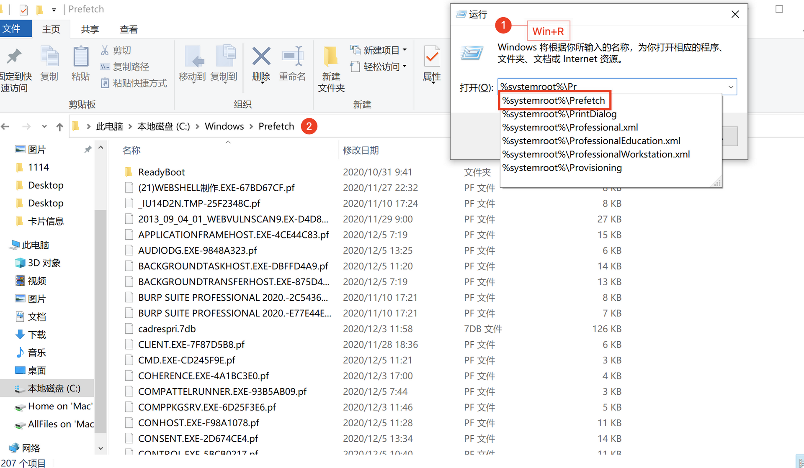
时间点查找
forfiles /m *.exe /d +2020/12/05 /s /p C:\ /c "cmd /c echo @path @fdate @ftime " 2> null &rem 针对2020-12-5日后的exe新建文件进行搜索Webshell
可利用D盾、HwsKill、WebshellKill等工具对目录下的文件进行规则查询
Linux
- 通过
stat命令查看相关时间，若修改时间与文件加密日期接近 - 通过
find . *.txt -perm 777查看当前目录下权限为777的文件 - 通过
ls -ar | grep "^\."查看当前目录下的隐藏文件
cat /etc/passwd | grep -E "/bin/bash$" # 查看能够登陆系统的账户敏感目录
- /usr/bin 和/usr/sbin
- .ssh/ 和/etc/ssh
- /tmp
时间点查找
find / -ctime 0 -name "*.sh" # 查找一天内新增的sh文件
ls -alt | head -n 10 # 列出最近修改的10个文件
stat <xx.sh> # 对xx.sh的创建、修改、访问时间进行排查特殊文件
- 常规检查
find / -type f -perm -04000 -ls -uid 0 2>/dev/null # 排查SUID程序 find /tmp -perm 777 | more # 查找777权限的文件 find /var/www/ -name "*.php" |xargs egrep 'assert|phpspy|c99sh|milw0rm|eval|\(gunerpress|\(base64_decoolcode|spider_bc|shell_exec|passthru|\(\$\_\POST\[|eval \(str_rot13|\.chr\(|\$\{\"\_P|eval\(\$\_R|file_put_contents\(\.\*\$\_|base64_decode' # 查找/var/www目录下的webshell find ./ -type f -name "*.jsp" | xargs grep "exec(" #查看网页是否有webshell特征 find ./ -type f -name "*.asp" | xargs grep "execute(" find ./ -type f -name "*.aspx" | xargs grep "eval("
ls -alt /bin # 对系统命令进行排查，查看命令目录中相关系统命令的修改时间
ls -alh /bin # 对系统命令进行排查，查看命令目录中相关系统命令的文件大小
2. 后门查杀
- [chkrootkit] 检测rootkit是否被安装到系统中
```zsh
chkroot -q | grep INFECTED #若发现rootkit后门，建议重装系统
```
- [rkhunter] 检测系统命令，包括MD5校验，本机敏感目录，系统配置，服务及套件，第三方应用版本等。
```zsh
rkhunter --check
```
[chkrootkit]: https://github.com/Magentron/chkrootkit.git
[rkhunter]: https://github.com/installation/rkhunter.git
## 进程排查
#### Windows
##### 通过`taskmgr`查看
> 添加【命令行】、【映射路径名称】列，获取更多信息

重点关注CPU、内存占用过高，网络使用率过高的进程
##### 通过`tasklist`查看
重点关注随机命名的进程，可通过威胁平台判定是否为恶意进程
```zsh
tasklist &rem 查看所有进程的映像名称、服务、PID、会话名等信息
tasklist /svc &rem 查看进程映像名，PID，服务
tasklist /m &rem 查看所有进程加载的DLL文件
tasklist /m ntdll.dll &rem 查看调用指定ntdll.dll文件的进程使用netstat查看
重点关注是否暴露135、445、3389等高危端口
netstat -anb | findstr "ESTABLISHED" &rem 查看端口连接情况及端口对应的程序，需要管理员权限
netstat -ano | findstr "ESTABLISHED" &rem 查看目前已建立的网络连接，可定位PID
tasklist | findstr <PID> &rem 定位具体的程序使用【PowerShell】查看
Get-WmiObject Win32_Process | select Name,ProcessId,ParentProcessId,Path # 获取进程名，进程ID，PID，路径使用【WMIC】查看
cmd下注释符 &rem PowerShell下注释符 #
wmic process get name,parentprocessid,processid,executablepath， commandline /format:csv &rem 获取进程名，PID，ID,执行路径,命令行
wmic process where processid=<PID> get name, executablepath &rem 获取指定PID的进程名和执行路径
wmic process where name="malware.exe" call terminate &rem 删除“malware.exe“恶意程序的进程
wmic process where processid=<PID> delete &rem 删除<PID>的进程Linux
netstat -antlp | more # 查看进程、端口连接情况，可定位PID
ls -alt /proc/<PID>/exe # 可查看PID对应可执行程序
lsof -p <PID> # 查看PID对应的进程打开的文件
systemctl status <PID> # 查看<PID>详细信息
top #查看CPU占用情况
free / cat /proc/meminfo # 查看内存占用情况
ps -e -o stat,ppid,pid,cmd | grep -e '^[Zz]' | awk '{print $2}' | xargs kill -9 #批量删除僵尸进程
ps aux | head -1; ps aux | sort -rn -k3 | head -10 #查看当前系统占用CPU最高的前10哥进程
ps aux | head -1; ps aux | sort -rn -k4 | head -10 #查看当前系统占用内存最高的前10哥进程
#查看隐藏进程
ps -ef | awk '{print}' | sort -n | uniq >1
ls /proc | sort -n | uniq >2
diff 1 2服务排查
Windows
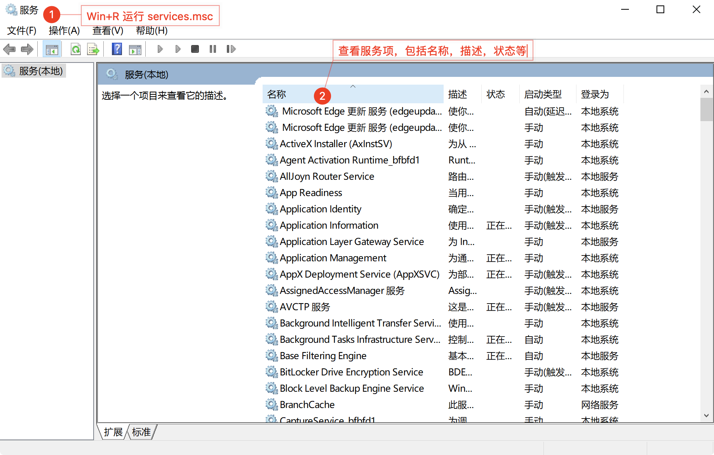
Linux
chkconfig --list # 查看系统运行的服务
service --status-all ｜ more # 查看所有服务的状态日志分析
通过分析日志，可发现攻击源、攻击路径、新建账户、新建服务等。
Windows
登陆相关日志事件ID及描述
|事件ID|名称|描述|
|:—:|:—:|:—|
|4624|用户登陆成功|大部分登陆事件成功时会产生的日志|
|4625|用户登陆失败|大部分登陆事件失败时产生的日志|
|4672|特殊权限用户登陆|Administrator登陆会产生的日志|
|4648|显式凭据登陆|使用runas /user以其他身份运行程序时产生的日志|
常用启动事件相关登陆事件ID及来源
|事件ID|名称|来源|
|:—:|:—:|:—|
|1074|关机初始化失败|User32|
|13|Windows关闭|Microsoft-Windows-Kernel-General|
|12|Windows启动|Microsoft-Windows-Kernel-General|
日志被清除相关事件ID及来源
|事件ID|名称|来源|
|:—:|:—:|:—|
|1100|事件日志服务关闭|Microsoft-Windows-EventLog|
|104|事件日志被清除|Microsoft-Windows-EventLog|
日志分类
系统日志
Windows系统中各个组件在运行中产生的各种事件，包括：
- 各种驱动程序出现的重大问题
- 各种组件出现的重大问题
- 应用软件出现的重大问题
重大问题指重要数据的丢失、错误及令系统崩溃
路径：
- Win2000、WinXP、WinServer2003
C:\WINDOWS\System32\config\SysEvent.evt - WinVista、Win7/8/10、Win2008及以后
%SystemRoot%\System32\Winevt\Logs\System.evtx
安全性日志
记录各种与安全相关的事件：
- 登陆与退出系统操作
- 对系统重要资源的操作，如增、删、改
路径：
- Win2000、WinXP、WinServer2003
C:\WINDOWS\System32\config\SecEvent.evt - WinVista、Win7/8/10、Win2008及以后
%SystemRoot%\System32\Winevt\Logs\Security.evtx
应用程序日志
记录各种应用程序所产生的各类事件，包括：
- MSSQL暴力破解
路径：
- Win2000、WinXP、WinServer2003
C:\WINDOWS\System32\config\AppEvent.evt - WinVista、Win7/8/10、Win2008及以后
%SystemRoot%\System32\Winevt\Logs\Application.evtx
其他日志
Dhcp、Bits-Client
路径：%SystemRoot%\System32\Winevt\Logs
日志分析
- 在勒索病毒事件处理中，主要查看创建任务计划、安装服务、关机、重启这样的异常操作。
主要检查登陆失败和登陆成功的日志，查看是否有异常的登陆行为，如暴力破解
通过内置日志筛选器进行分析
Win+R键后运行eventvwr即可打开事件查看器，查看相关日志
通过日志筛选器可对记录事件、事件级别、任务类别、关键字等信息进行筛选。
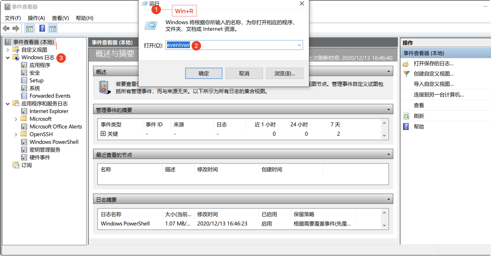
通过Powershell进行日志分析
需要管理员权限
Get-EventLogGet-EventLog Security -InstanceId 4625 # 获取登陆失败的日志Get-WinEvent-推荐Get-WinEvent -FilterHashtable @{LogName='Security';ID='4625'} # 获取登陆失败的日志
通过相关日志工具进行分析查询
- FullEventLogView
一个轻量级日志检索工具，检索速度比Windows自带的检索工具要快，界面更好 - Event Log Explorer
一个检测系统安全的软件，可查看、监视和分析事件记录，包括安全性，系统，应用程序和其Windows系统事件记录 - Log Parser
官方退出的日志分析工具，功能强大使用简单LogParser.exe -i:EVT -o:DATAGRID "SELETC * FROM C:\Security.evtx where EventID=4624" &rem 查看所有成功登陆事件 LogParser.exe -i:EVT -o:DATAGRID "SELECT * FROM C:\Security.evtx where TimeGenerated>'2020-8-1 23:59:59' and TimeGenerated<'2020-9-1 23:59:59' and EventID=4625" &rem 查看指定时间内所有登陆失败的日志 LogParser.exe -i:EVT -o:DATAGRID "SELECT TimeGenerated,EventID,Message FROM C:\System.evtx where EventID=12 or EventID=13" &rem 查看系统历史开关机记录
Linux
系统日志一般存放在/var/log/目录下：
- 查看所有用户最后的登陆信息
lastlog - 查看用户登陆失败信息
lastb - 查看用户最近登陆信息
last
日志路径介绍
日志文件及描述
|文件|描述|
|:—:|:—|
|/var/log/wtmp|记录登陆、退出、关机、重启等操作，即last|
|/var/log/cron|记录与定时任务相关的日志信息|
|/var/log/messages|记录系统启动后的信息和错误日志|
|/var/log/apache2/access.log|记录Apache访问日志|
|/var/log/auth.log|记录系统授权信息，包括用户登陆和使用过的授权|
|/var/log/userlog|记录所有等级用户信息的日志|
|/var/log/xferlog(vsftpd.log)|记录Linux FTP日志|
|/var/log/lastlog|记录登陆的用户|
|/var/log/secure|记录大多数应用输入的账户与密码，以及登陆成功与否|
|/var/log/faillog|记录登陆失败的日志|
日志分析
cat /var/log/cron #查看任务计划相关的操作日志
cat /var/log/messages # 查看整体系统信息
cat /var/log/secure #查看验证和授权方面的信息
cat /var/spool/mail/root # 查看root邮件中的信息
ls -alt /var/spool/mail # 查看邮件相关日志记录文件其他日志位置
IIS
%SystemDrive%\inetpub\logs\LogFiles%SystemRoot%\System32\LogFiles\W3SVC1%SystemDrive%\inetpub\logs\LogFiles\W3SVC1%SYstemDrive%\Windows\System32\LogFiles\HTTPERR
Apache
/var/log/httpd/access.log/var/log/apache/access.log/var/log/apache2/access.log/var/log/httpd-access.logNginx
可通过nginx.conf查看
/var/local/nginx/logs/access.log/var/local/nginx/logs/error.log
Tomcat
TOMCAT_HOME/logs/
Vsftp
查看 /etc/vsftp/vsftp.conf
WebLogic
默认情况下，WebLogic有以下三种日志：
- access.log
$MW_HOME\user_projects\domains\<domain_name>\servers\<server_name>\logs\access.log - server.log
$MW_HOME\user_projects\domains\<domain_name>\servers\<server_name>\logs\<server_name>.log - domain.log
$MW_HOME\user_projects\domains\<domain_name>\servers\<adminserver_name>\logs\<domain_name>.log
数据库日志
Oracle
默认路径
$ORACLE/rdbms/log/
select * from v$logfileMySQL
默认路径
/var/log/mysql
show variables like 'log_%' # 查看是否启用日志
show variables like 'general' # 查看日志位置MSSQL
登陆SQL Server Management Studio, 在管理-SQL Server日志中查看
内存分析
内存的获取
基于内核模式程序的内存获取
可使用以下工具进行获取：
- Dumpit
- Redline
- RAM Capturer
- FTK Imager
基于系统崩溃转出的内存获取
按Win+R运行sysdm.cpl找到存储文件 %SystemRoot%\MEMORY.DMP
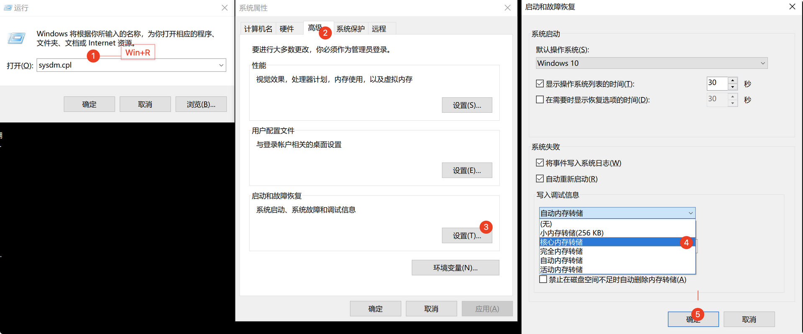
基于虚拟化快照的内存获取
通过VMware Workstation、 ESXI等虚拟机软件实现的
内存分析
Redline
获取内存文件后，导入到Redline进行分析，其主要收集在主机上运行的有关进程信息、内存中的驱动程序、及其他数据(元数据、注册表数据、任务、服务、网络信息、Internet历史记录等)，最终生成报告Volatility
一个开源的内存取证工具，可以分析入侵攻击痕迹，包括网络连接、进程、服务、驱动模块、DLL、handles、进程注入、cmd历史命令、IE历史记录、启动项、用户、shimcache、userassist、部分rootkit隐藏文件、cmdliner等。volatility -f /root/2020.mem --profile=Win2008R2SP1x64 netscan #查看内存镜像中的网络连接 volatility -f /root/2020.mem --profile=Win2008R2SP1x64 psxview #查看内存镜像中带有隐藏进程的所有进程列表 volatility -f /root/2020.mem --profile=Win2008R2SP1x64 malfind #查看内存镜像中隐藏或注入的代码 volatility -f /root/2020.mem --profile=Win2008R2SP1x64 cmdscan #查看内存镜像中执行的相关历史命令记录 volatility -f /root/2020.mem --profile=Win2008R2SP1x64 procdump -p <PID> -D #提取内存镜像中指定的进程文件，将提取的进程文件上传到virustotal平台进行扫描。
## 流量分析
- Wireshark
- tcpdump
若数据包中带有z0、eval、base64_decode,则数据包很可能是中国菜刀客户端流量
若数据包中带有特殊的Referer、Accept-Language，则数据包可能是Weevely Webshll流量
若数据包中含有[**PSH**,ACK],一般是利用msf中的reverse_tcp上线
Wireshark筛选器过滤命令
```zsh
HTTP # 对协议进行过滤 ，HTTPS，SMTP，ARP等
ip.addr==<ip> #对特定ip地址进行过滤
ip.src==<ip> #对指定的源ip进行过滤
tcp.port==<port> #对tcp端口进行过滤
udp.port==<port> #对udp端口进行过滤
tcp contains <string> # 对特定字符串进行过滤- 分析内网是否存在针对445端口的扫描和MS17-010漏洞的利用
- 分析溯源勒索终端被入侵的过程
- 分析邮件附件MD5值匹配威胁情报的数据，判定是否为勒索病毒
- 分析网络中传播的文件是否被二次打包，进行植入式攻击
- 分析在正常网页中植入密码，让访问者在浏览网页时利用IE浏览器或Flash等软件漏洞实施攻击的情况
威胁情报平台
- Virustotal
- 微步威胁平台
- Threat Crowd
- 奇安信威胁情报中心
- 360威胁情报中心
- 绿盟威胁情报中心
- 启明VenusEye威胁情报中心
- 安恒威胁情报中心
- RedQueen安全智能服务平台
- IBM情报中心
转载请注明来源，欢迎对文章中的引用来源进行考证，欢迎指出任何有错误或不够清晰的表达。可以在下面评论区评论，也可以邮件至 askding@qq.com